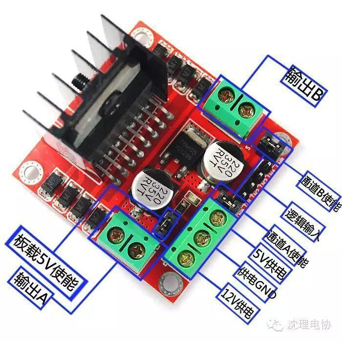

使用小程序
298N
亲爱的小伙伴们！！！想死你们了。经过上周六的分组大家一定都找到了自己的组长。 告诉你们一个消息，本周六“电协杯”机器人大赛开始报名（不要告诉别人哦）。各组长这周就会陆续给大家安排组队和购买比赛用品的事。相信你们一定会在12月中旬的比赛中取得骄人的成绩~~~
今天给大家介绍一件比赛中很重要的东西——电机驱动模块。我们的小车使用单片机控制的，但是单片机的信号是不足以让电机转起来的，所以就需要它了~~~
推荐给大家一款经济常用的298N驱动模块，接下来我给大家简单介绍一下它的用法。

首先是供电：把12v供电接电源正极，GND接到负极。（“5V供电”是可以输出5V电给单片机供电的）
连接电机：A，B就是连接电机的
最后控制：“逻辑输入”就是这里输入单片机信号，“IN1”“IN2”控制A输出，“IN3”“IN4”控制B输出，（IN1=1，IN2=0电机正传；IN1=0，IN2=1电机翻转，另两个一样）。就OK啦